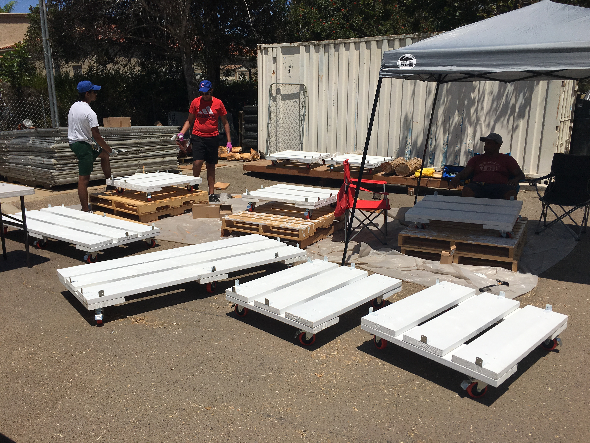
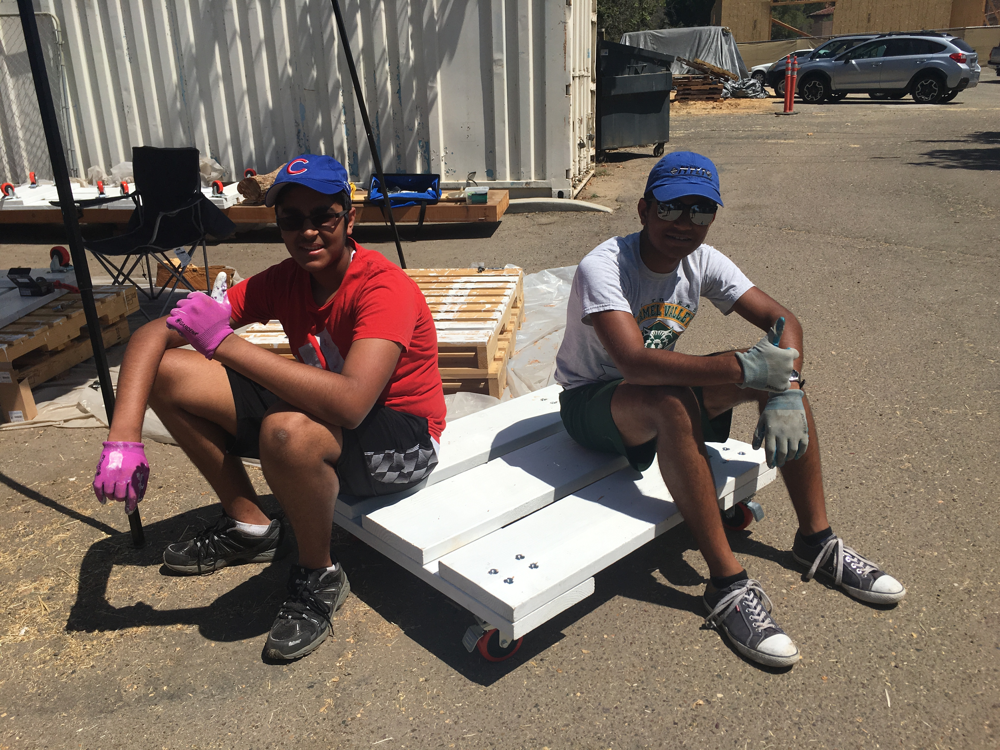
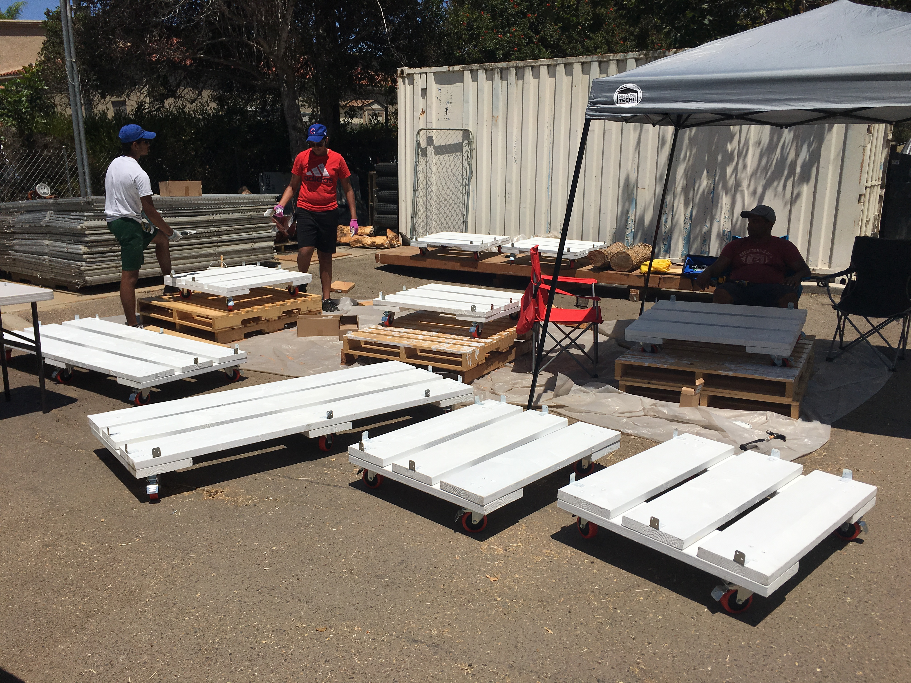
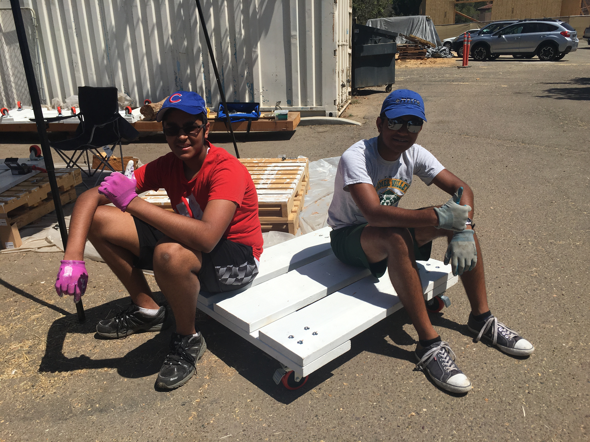

Dwayne Pereira
Hello and welcome to my site, I have organized this site to describe my professional and educational experiences. Over the past few years, I have accumulated many skills at the jobs and community service positions I have held: Sales, Teaching, Volunteering, Leadership, and Problem Solving. Through my multiple community leadership experiences, I have demonstrated not only organization and planning skills, but most importantly my passion to motivate others to become successful. As an example, I demonstrated this in my church community whilst teaching a class of Kindergarten, Sixth, and Eighth Graders. During this, I taught the young minds the important aspects of their faith in order for them to classify and be successful followers of their faith. I demonstrate an energetic and genuine persona learned from teaching, towards all my peers and teachers around him in the school environment. Another example is my desire to relay my knowledge to others as seen in my community leadership helping Hispanic students that cannot afford homework help. I work with my students as a teacher and a mentor teaching and clarifying hard concepts especially difficult to a student where English is a second language. I used my creativity and knowledge of the Spanish language to help communicate and guide my two students better succeed in their school environment regardless of their backgrounds.
Academically I have the ability to connect multiple academic subjects together as an interdisciplinary thinker. Furthermore, I am driven by a unique intellectual curiosity and grasps any opportunity to learn beyond school textbooks. As an example, I not only took Business courses at school to learn about marketing and how to effectively market and sell a product but had also decided to take up work at a local business, The Ceramic Cafe, to implement what I had learned at school. I was able to get people into the store with my effective communication. With my marketing skills, I was able to tailor to the needs of different age group clientele. I managed to entice and retain the customers who entered the cafe. This made him very competitive and enterprising to increase business revenues. Prior to this, I practiced the same skills selling popcorn for my scout troop and collecting large sums of money for the troop.
I exhibit a unique style of leadership across my multitude of community activities. I know how to motivate people by communicating clear shared visions and engaged them with a strong sense of mission. I led a community project based on my vision to give back to the community in helping the Helen Woodward Animal Shelter. I helped plan, fundraise, and construct 9 wooden dollies of two sizes (6x3 and 3x3) with the help of fellow boy scouts and other members of the community. These dollies are used to wheel cat cages at the facility making it easier to transport the cats for grooming, bathing, and securing a warm, cozy, permanent home for them. I maximized my role in my troop by organizing meetings with the troop and Helen Woodward Associates, fundraising, and public speaking in order to promote and establish this project and connection. I successfully achieved my goal of completing this major community project and receiving an Eagle Award, the highest rank in scouting, in April 2019. Another key aspect of I is my ability to visualize, address, and execute problems that are going on in the community. I noticed that the elderly in my church community lack experience in the ever-changing technology field. I then addressed this problem with my vision to create monthly meetings called OATS, Older Adult Technology Services, in order to help the elderly of the community. While executing my vision to better my community I learned valuable lessons in communication amongst the elders, leadership, and commitment to my cause.I was also able to use this interaction with the seniors of the community and identify ways to better their lives by suggesting key features in the all in one inclusive application “Chatsasy”, a summer internship that I worked on identifying bugs before the product release into the market.
Experience
Salesperson
Responsiblities:
• To manage the stored attract varied age group clientele.
• To effectively communicate prices and take B’day party request bookings.
• To organize B’day parties and plan arrangements of big groups.
• To dispense cash and tally accounts at the end of the shift.
• To bag items and tally receipt with items bought and painted.
• To clean pallets and brushes used for painting after each client.
• To keep the premise clean and orderly after work for the next shift.
Information Technology Intern
About: Chatstasy combines the functions of caller, texting, voicemail, emergency calling, cloud backup, and contacts management in an application. The creator of this application employed students to help debug/test the functions of the app before released to the general public.
Responsiblities:
• Run tests and report back to the application developers.
• Communicate specifically towards superiors.
• Think on ways to better the app to better suit the target market of the elderly.
Middle School Tutor
Responsiblities:
• Planning lessons and mentoring seventh and sixth-grade students.
• Exploring different areas of interests and finding ways to contribute to their success.
• Help them develop the skills required to prepare them to maintain a good GPA during high school.
Education
UC Riverside
Canyon Crest Academy
Portfolio



 